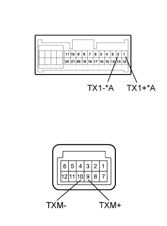

NAVIGATION SYSTEM (for HDD) > AVC-LAN Circuit |

| 1.INSPECT DISPLAY AND NAVIGATION MODULE DISPLAY |
|  |
Remove the display and navigation module display (Click here).
Measure the resistance according to the value(s) in the table below.
| Tester Connection | Condition | Specified Condition |
| 1 (TX1+) - 2 (TX1-)* | Always | 60 to 80 Ω |
| 9 (TXM+) - 10 (TXM-) | Always | 60 to 80 Ω |
| *A | w/ Side Monitor System |
|
| ||||
| OK | |
| 2.CHECK HARNESS AND CONNECTOR (DISPLAY AND NAVIGATION MODULE DISPLAY - WHICH HAS STEREO THIS CODE) |
Referring to the AVC-LAN wiring diagram above, check all AVC-LAN circuits.
Disconnect all connectors in all AVC-LAN circuits.
Check for an open or short in all AVC-LAN circuits.
|
| ||||
| OK | |
| 3.INSPECT MALFUNCTIONING PARTS |
Disconnect and reconnect each slave unit one by one until the master unit returns to normal operation.
|
| ||||
| OK | ||
| ||